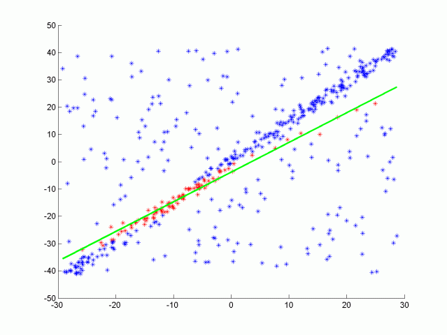
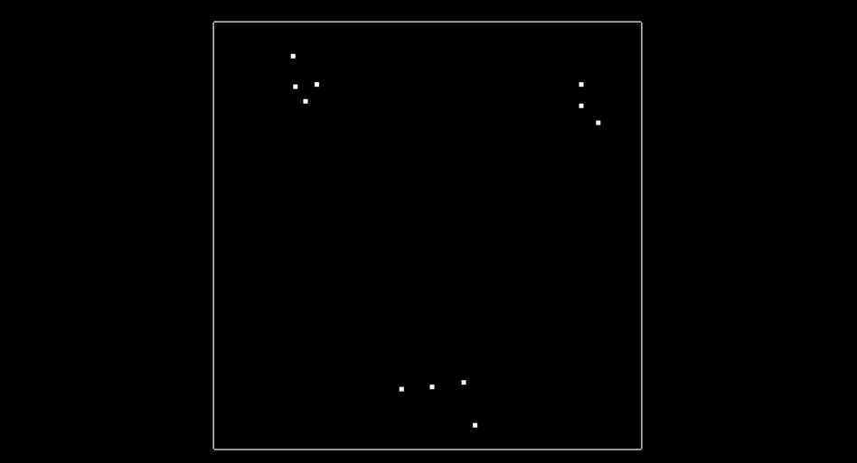

Lidar Obstacles Detection
In this project, we create a simple 3d highway enviroment using Point Cloud Library for exploring self-driving car sensors.

The main objective was to implement three essential algorithms used to identify obstacles using Lidar: RANSAC, KD-Tree, and Euclidean clustering, as these are required as part of the processing pipeline: filtering, segmentation, clustering, and bounding boxes. And use it to detect car and trucks on a narrow street using lidar. Although PCL’s built in segmentation and clustering functions were not used, they were useful for testing.
In this object detection problem, we were concern about bounding boxes enclosing appropriate objects, as vehicles and the poles, where there is only one box per detected object. And objects being consistently detected across frames in the video. Most bounding boxes can be followed through the lidar stream, and major objects don’t lose or gain bounding boxes in the middle of the lidar stream. Segmentation was also implemented in the project, the code used for segmentation uses the 3D RANSAC algorithm. As well as clustering, using for clustering the Euclidean clustering algorithm along with the KD-Tree.
For code efficiency, was kept in mind not running the exact same calculation repeatedly when you can run it once, storing the value and then reuse the value later. Avoid loops that run too many times. And the creation of unnecessarily complex data structures when simpler structures work equivalently.
C++ was used in this whole project, which is part of the Udacity Sensor Fusion Nanodegree and the whole code can be found in my Github. Images and text are credit to Aaron Brown.
At environment.cpp we can found the main function, with the city block creator and how camera should start. At processPointClouds.cpp and processPointClouds.h all the necessary function are implemented:
- filtering the cloud, with voxel grid point reduction and region based filtering
- separating cloud, one cloud with obstacles and other with segmented plane
- segmenting plane, applying RANSAC, find inliers and segment the largest planar component
- clustering, performing euclidean clustering to group detected obstacles, creating the KdTree object for the search method of the extraction
- findind bounding box for one of the clusters
Implementing RANSAC

RANSAC stands fors Randomly Sample Consensus, and is a method for detecting outliers in data. RANSAC runs a for a max number of iterations, and returns the model with the best fit. Apart from the 3D RANSAC implemented in this project, a RANSAC for fitting a line in 2D point data with outliers were also tested. The code is located in src/quiz/ransac2d.cpp and the function to fill out is Ransac which takes in arguments for a point cloud, max iterations to run, and distance tolerance. The point cloud is actually pcl::PointXYZ but the z component will be set to zero to make things easy to visualize. The image below shows how the data looks.

The data was generated by creating a line with points slightly scattered, and then outliers were added by randomly placing points in the scene. We want to be able to identify which points belong to the line that was originally generated and which points are outliers. To do this you will randomly sample two points from the cloud and fit a line between the points. A helpful line equation for this problem can be seen below.
Ax + By + C = 0
for point1 (x1, y1), and point2 (x2, y2)
(y1 y2)x + (x2 x1)y + (x1y2 x2y1) = 0
After fitting the line you can then iterate through all the points and determine if they are inliers by measuring how far away the point is from the line. You can do this for each iteration keeping track of which fitted line had the highest number of inliers, the line with the most inliers will be the best model. The equation for calculating distance between a point and line is shown below. For further details see this.
line is Ax + By + C = 0
point (x,y)
d = |A*x+B*y+C|/sqrt(A^2+B^2)
Here is the results of doing RANSAC to fit a line from the data above. Inliers are green while outliers are red, the function had a max iteration size of 50, and a distance tolerance of 0.5. The max iteration size depends on the ratio of inliers to the total number of points. The more inliers our data contains the higher the probability of selecting inliers to fit the line to.

The method above was for fitting a line, you can do the same thing for fitting plane in a 3D point cloud by using the equation for a plane from three points, and the distance formula for a point to a plane.
plane is Ax + By + Cz + D = 0
for point1 (x1, y1, z1)
for point2 (x2, y2, z2)
for point3 (x3, y3, z3)
Use point1 as reference and define two vectors on the plane v1, and v2
vector v1 travels from point1 to point2
vector v2 travels from point1 to point3
v1 = < x2 - x1, y2 - y1, z2 - z1 >
v2 = < x3 - x1, y3 - y1, z3 - z1 >
Find normal vector of plane by taking cross product of v1 x v2.
v1 x v2 = <(y2-y1)(z3-z1)-(z2-z1)(y3-y1), (z2-z1)(x3-x1)-(x2-x1)(z3-z1), (x2-x1)(y3-y1)-(y2-y1)(x3-x1)>
To simplify notation we can write it in the form
v1 x v2 = < i, j, k >
then ,
i(x-x1)+j(y-y1)+k(z-z1) = 0,
ix + jy + kz -( ix1 + jy1 + kz1 ) = 0
A = i
B = j
C = k
D = -( ix1 + jy1 + kz1 )
And the distance formula from a point to the plane is then,
plane is Ax + By + Cz + D = 0
point (x,y,z)
d = |A*x+B*y+C*z+D|/sqrt(A^2+B^2+C^2)
Implementing KD-Tree and Euclidean Clustering
A KD-Tree is a binary tree that splits points between alternating axes. By seperating space by splitting regions, it can make it much faster to do nearest neighbor search when using an algorithm like euclidean clustering. Here we will be looking at a 2D example, so the the tree will be a 2D-Tree. The code can be found at src/quiz/cluster/kdtree.h and using the function insert which take a 2D point represented by a vector of 2 floats, and a point ID, this is just a way to uniquely identify points and a way to tell which index they are from the overall point cloud. To understand the insert function let’s first talk about how a KD-Tree splits information.
Inserting Points into the Tree

The image above shows what the 2d points look like, in this simple example there is only 11 points, and there is 3 clusters where points are in close proximity to each other that you will be finding. The image below shows what the tree looks like after all 11 points have been inserted.

Now lets talk about how exactly the tree is created. At the very beginning when the tree is empty, root is NULL, the point inserted becomes the root, and splits the x region. Here is what this visually looks like, after inserting the first point (-6.2, 7).

The next point is (-6.3,8.4), since -6.3 is less than -6.2 this Node will be created and be apart of root’s left node, and now the point (-6.3,8.4) will split the region in the y dimension. The root was at depth 0, and split the x region, the next point become the left child of root and had a depth of 1, and split the y region. A point at depth 2 will split the x region again, so the split can actually be calculated as depth % 2, where 2 is the number of dimensions we are working with. The image below show how the tree looks after inserting the second point.

Then here is what the tree looks like after inserting two more points (-5.2,7.1), (-5.7,6.3), and having another x split division from point (-5.7,6.3) being at depth 2 in the tree.

The image below shows so far what the tree looks like after inserting those 4 points. The labeled nodes A, B, C, D, and E are all NULL but if the next point (7.2,6.1) is inserted, whill of those 5 nodes will it be assigned to ?

The answer is D. Let’s look at why this is. First the root (-6.2, 7) and the point(7.2, 6.1) x region will be compared. 7.2 is greater than -6.2 so the new point will branch off to the right to (-5.2, 7.1). Next the y region will be compared, 6.1 is less than 7.1 so the new point will branch off to the left to (-5.7,6.3). Last the x region will be compared again, 7.2 is greater than -5.7 so the new point will branch to the right and will be Node D.
Logically this is how points are inserted, how about doing this in C++? Implementing a recursive helper function to insert points can be a very nice way to update Nodes. The basic idea is the tree is traversed until the Node is arrives at is NULL in which case a new Node is created and assigned at that current NULL Node. For assinging a Node, one idea is to use a double pointer, you could pass in a pointer to the node, starting at root, and then when you want to assign that node, derefrence pointer and assign it to the newly created Node. Another way of achieving this is by using a pointer reference as well.
Improving the Tree Structure
Having a balanced tree that evenly splits regions improves the search time for finding points later. To improve the tree insert points that alternate between splitting the x region and the y region. To do this pick the median of sorted x and y points. For instance if you are inserting the first four points that we used above (-6.3,8.4),(-6.2,7),(-5.2,7.1),(-5.7,6.3) we would first insert (-5.2,7.1) since its the median for the x points, if there is an even number of elements the lower median is chosen. The next point to be insorted would be (-6.2,7) the median of the three points for y. Followed by (-5.7,6.3) the lower median between the two for x, and then finally (-6.3,8.4). This ordering will allow the tree to more evenly split the region space and improving searching later.
Searching Nearby Points in the Tree
Once points are able to be inserted into the tree, the next step is being able to search for nearby points (points within a distance of distanceTol) inside the tree compared to a given pivot point. The kd-tree is able to split regions and allows certain regions to be completly ruled out, speeding up the process of finding nearby neighbors. The naive approach of finding nearby neighbors is to go through every single point in the tree and compare its distance with the pivots, selecting point indices that fall with in the distance tolerance. Instead with the kd-tree we can compare distance within a boxed square that is 2 x distanceTol for length, centered around the pivot point. If the current node point is within this box then we can directly calculate the distance and see if we add it to the list of ids. Then we see if our box crosses over the node division region and if it does compare that next node. We do this recursively, with the advantage being that if the box region is not inside some division region we completly skip that branch.
Euclidean Clustering
Once the kd-tree method for searching for nearby points is implemented, its not difficult to implement a euclidean clustering method that groups indidual cluster indicies based on their proximity. Inside cluster.cpp there is a function called euclideanCluster which returns a vector of vector ints, this is the list of each cluster’s indices. To perform the clustering, iterate through each point in the cloud and keep track of which points have been processed already. For each point add it to a cluster group then get a list of all the points in proximity to that point. For each point in proximity if it hasn’t already been processed add it to the cluster group and repeat the process of calling proximity points. Once the recursion stops for the first cluster group, create a new cluster and move through the point list. Once all the points have been processed there will be a certain number of cluster groups found.
There are three clusters found, using a distance tolerance of 3.0. Each cluster group is colored a differently, red, green, and blue.
Would you like to receive the most important news and trends in AI in just one email every end of the month? Subscribe below and I’ll send you the 10 most important news in Artificial Intelligence
Subscribe to Edge AI Guru
Get the latest posts delivered right to your inbox